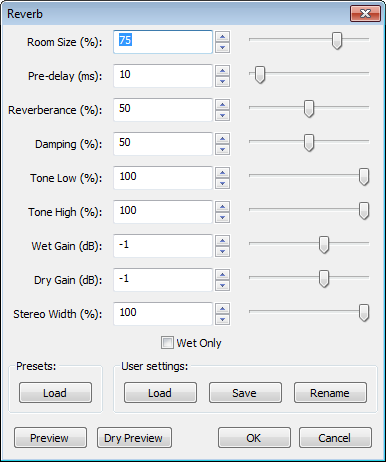

Reverb
From Audacity Manual
Applying a small amount of stereo reverb to an untreated mono signal duplicated into a two-channel stereo track will usually make it sound more natural.
- Accessed by:
- 
Settings
- Room Size (%): Sets the size of the simulated room. 0% is like a closet, 100% is like a huge cathedral or large auditorium. A high value will simulate the reverberation effect of a large room and a low value will simulate the effect of a small room.
- Pre-delay (ms): Delays the onset of the reverberation for the set time after the start of the original input. This also delays the onset of the reverb tail. The maximum pre-delay is 200 milliseconds. Careful adjustment of this parameter can improve the clarity of the result.
- Reverberance (%): Sets the length of the reverberation tail. This determines how long the reverberation continues for after the original sound being reverbed comes to an end, and so simulates the "liveliness" of the room acoustics. For any given reverberance value, the tail will be greater for larger room sizes.
- Damping (%): Increasing the damping produces a more "muted" effect. The reverberation does not build up as much, and the high frequencies decay faster than the low frequencies. Simulates the absorption of high frequencies in the reverberation.
- Tone Low (%): Setting this control below 100% reduces the low frequency components of the reverberation, creating a less "boomy" effect.
- Tone High (%): Setting this control below 100% reduces the high frequency components of the reverberation, creating a less "bright" effect.
- Wet Gain (dB): Applies volume adjustment to the reverberation ("wet") component in the mix. Increasing this value relative to the "Dry Gain" (below) increases the strength of the reverb.
- Dry Gain (dB): Applies volume adjustment to the original ("dry") audio in the mix. Increasing this value relative to the "Wet Gain" (above) reduces the strength of the reverb. If the Wet Gain and Dry Gain values are the same, then the mix of wet effect and dry audio to be output to the track will be made louder or softer by exactly this value (assuming "Wet Only" below is not checked).
- Stereo Width (%): Sets the apparent "width" of the Reverb effect for stereo tracks only. Increasing this value applies more variation between left and right channels, creating a more "spacious" effect. When set at zero, the effect is applied independently to left and right channels.
- Wet Only: When this control is checked, only the wet signal (added reverberation) will be in the resulting output, and the original audio will be removed. This can be useful when previewing the effect, but in most cases you should uncheck this when applying the effect.
Wet Only may be used however to create a "reverb only" track that you can then mix in greater or lesser proportion with the original track. See Examples below for complete steps.
Presets
- Load: Click this button to load one of nine fixed presets:
- Vocal I
- Vocal II
- Bathroom
- Small Room Bright
- Small Room Dark
- Medium Room
- Large Room
- Church Hall
- Cathedral
- Selecting the preset then clicking loads the settings for that preset into the effect.
User Settings
- Load: Click this button to choose a user-specified parameters setting. Selecting the named setting then clicking button loads those settings into the effect.
- Save: Click this button to save the current effect parameters as one of the settings in the list. Selecting the named setting then clicking the saves your parameters under that name. If you want to save as a name not in the list, click "Rename" (below) instead.
- Rename: Click this button to rename a selected setting. In the "Reverb Settings" dialog, select a setting then click the button to open a dialog to change that setting's name. Type the required name then click the button to change the setting's name.
Previews
- Preview: Exactly like "Preview" in other effects (previews what the effect would sound like if applied at its current settings).
- Dry Preview: Previews the original audio selection entirely unprocessed (ignoring all the effect settings including "Wet Only"), just like playing that selection in the main window. Listening to "Dry Preview" then "Preview" thus gives you a quick "before" and "after" comparison of the effect.
Examples
| Always add a few seconds of silence to any track to which you intend to apply the Reverb effect. The reverb tail will continue for several seconds after the sound ends. If you do not add silence to the end of the track the reverb will cut off unnaturally. |
Apply a rich and bright reverb to a "dry" vocal recording
This method uses the built-in preset Vocal II. Alternatively, Vocal I produces a softer, less noticeable reverb. For advanced users, any preset can be used as a starting point for creating new presets.
- Ensure that there is a few seconds of silence at the end of the audio so that the final note can fade away naturally. If necessary, add a few seconds of silence to the end of the track (see steps 1.1 to 1.4 in the example below).
- Select the audio track that contains the vocal recording.
- Click to launch the Reverb effect.
- In the "Presets" panel, click the button, select Vocal II from the list then click . The controls will now have been adjusted according to the selected preset.
- Click on the button.
Keep the reverb effect on a separate track
With this method, you duplicate the track to want to apply reverb to, then apply the Reverb effect to the duplicate track, checking the "Wet Only" checkbox in the Reverb dialog. You can then control the amount of reverb in the final mix by adjusting the Track Gain Sliders on the reverbed and original track. This gives you the flexibility to tweak the proportion of reverb at any time after applying the effect.
- Add a few seconds of silence to the end of the track:
- Click the Skip to End button on Transport Toolbar or press the shortcut K
- Click
- Choose how much silence to add (20 seconds is the most you will ever need, 5 second will often be adequate)
- Click to add the silence to the end of the track.
- Select the entire track by clicking on the empty space in the Track Control Panel or use SHIFT + J.
- Click or use its shortcut CTRL + J.
- Duplicate the track by selecting the track then clicking .
- Select the duplicate track on its own.
- Apply the Reverb effect to the duplicate track, making sure the
 Wet Only checkbox has the checkmark.
Wet Only checkbox has the checkmark.
- Play the tracks then use the Gain Slider on the reverbed (wet) track and on the original track to mix in a pleasing amount of reverb. Make sure the combined gain is low enough so that the red clipping indicators at the end of the Playback Meter's playback bars do not come on.
Adding stereo reverb to a mono track
It is often desirable to add reverb to a mono track (such as a vocal) but add a stereo "spread" to the reverb. This is generally more pleasing and sounds better when the final mix is in stereo.
- Add a few seconds of silence to the end of the track (steps 1.1 through 1.5 in the example above).
- Duplicate the track by selecting the track then clicking .
- From the Audio Track Dropdown Menu on the upper track, select Make Stereo Track
 .
.
- Select the new stereo track.
- Apply the Reverb effect to the track, choosing a pleasing value for "Stereo Width" and making sure to uncheck the
 Wet Only checkbox.
Wet Only checkbox.
This method can be expanded to incorporate the reverb on a separate track, as follows.
- Add a few seconds of silence to the end of the track (steps 1.1 through 1.5 in the first example).
- Duplicate the track (select the track then click ).
- From the Audio Track Dropdown Menu on the upper track, select Make Stereo Track .
- Select the new stereo track.
- Duplicate the track by selecting the track then clicking .
- Select the duplicate track on its own.
- Apply the Reverb effect to the duplicate track, making sure the Wet Only checkbox has the checkmark.
- From the Audio Track Dropdown Menu of the original track, select Split Stereo to Mono .
- Delete one of the two resulting mono tracks by clicking the Track Close Button
 or selecting that track then choosing (this last step is not strictly necessary, but reduces track clutter and makes it clear that the original track is mono.)
or selecting that track then choosing (this last step is not strictly necessary, but reduces track clutter and makes it clear that the original track is mono.)
- Play the tracks then as in the first example, adjust the Gain Sliders of the reverbed (wet) and original tracks to mix in a pleasing amount of reverb, ensuring that the result does not clip.